AZURE API MANAGEMENT + MICROSOFT FOUNDRY
APIM ke Foundry, urut dari koneksi sampai laporan.
Ikuti satu contoh: Project X. Pahami koneksinya, siapkan APIM, kirim satu pesan, lalu temukan request itu di workbook.
Menu + screenshot membuka petunjuk di halaman ini: mulai dari resource mana, urutan menu, dan bagian layar yang dituju.
01 / CARA KERJA
1. APIM tersambung ke mana?
Jalur pesan
Jalur log dan workbook
FoundryDemoRequests_CL) → workbook lama. LAW menyimpan log; workbook hanya membaca dan menampilkannya.Prasyarat dan resource lab yang sudah tersedia (opsional)
Lab berada di resource group rg_demo_pamadigi. Resource dibuat lewat Bicep; screenshot berikut menunjukkan tempat memeriksanya, bukan bukti deploy lewat klik.
Langkah 1–7 · Resource group sampai identitas APIM

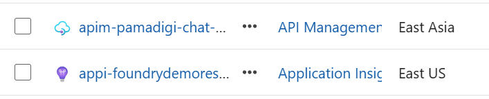

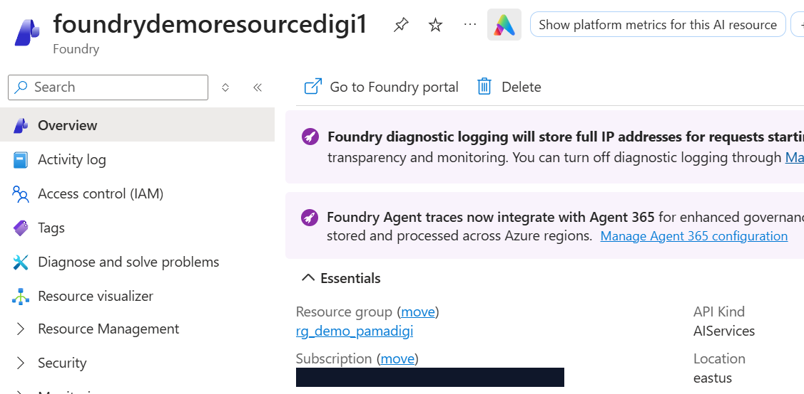

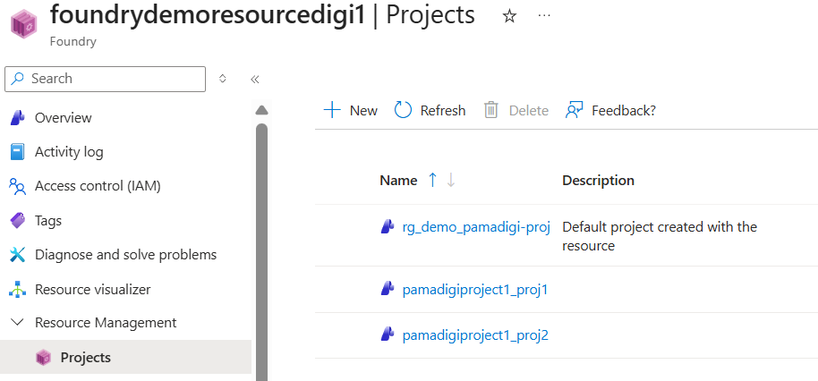

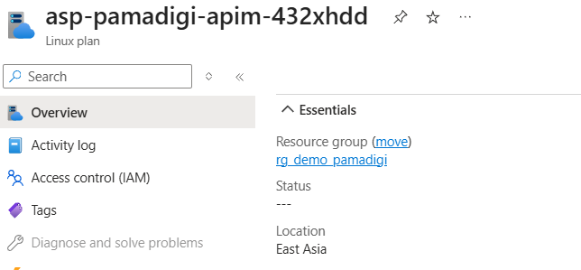

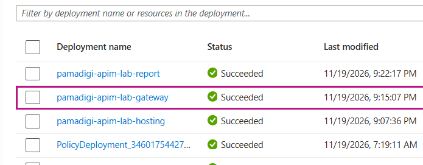

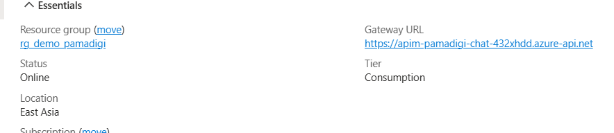

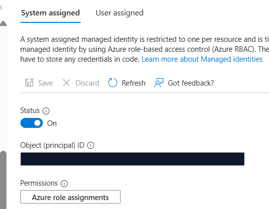
Langkah 8–11 · Sambungkan telemetry

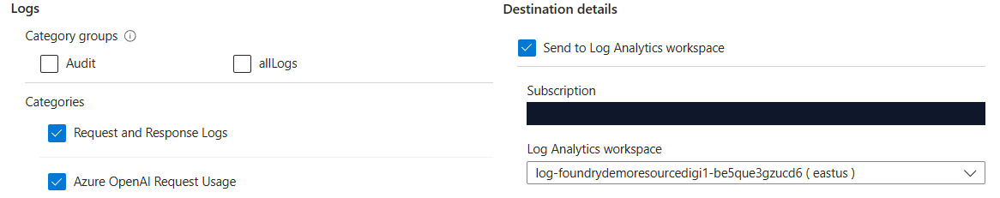

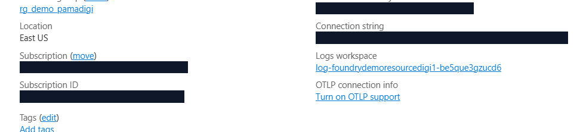

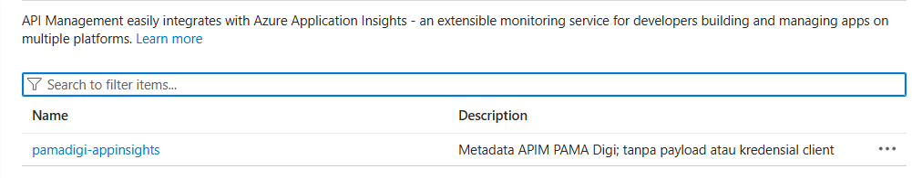
pamadigi-appinsights.
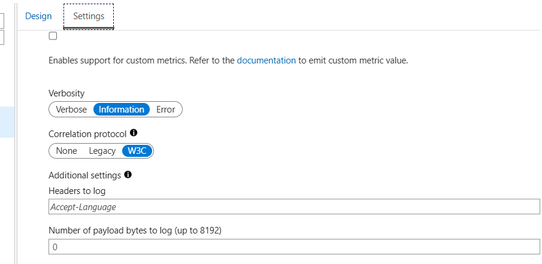
02 / SETUP KONEKSI
2. Siapkan Project X dalam urutan ini
Mulai dari APIM apim-pamadigi-chat-432xhdd yang sudah ada. Pilih nomor untuk melihat bagian yang diatur; Menu + screenshot membuka petunjuk lokasinya.
Di dalam API Management
Di luar APIM
Buat alamat masuk dan operasi chat.
Sorotan tebal = diatur; putus-putus = terkait. Ini panduan, bukan status live Azure.
Rincian setting dan menu per langkah
| Urutan | Yang diatur | Lokasi |
|---|---|---|
| 1. API & operation | Suffix project-x/openai/v1, operasi POST /chat/completions, subscription wajib. | Menu + screenshot |
| 2. Product & key | Product X hanya berisi API X. Subscription pamadigi-project-x menghasilkan key X. | Menu + screenshot |
| 3. Identity & izin | Identity APIM On; role Foundry User pada scope project X, bukan seluruh account. | Menu + screenshot |
| 4. Backend & model | Inbound policy memilih host Foundry, path project X, dan deployment modelprojectX. | Menu + screenshot |
| 5. Setting aplikasi | Isi APIM_BASE_URL dan APIM_SUBSCRIPTION_KEY di server Web App X. | Menu + screenshot |
| 6. Pengiriman log | Logger pamadigi-appinsights, diagnostic API aktif, payload 0 byte. Foundry mengirim log ke LAW utama yang sama. | Menu + screenshot |
Galeri sumber untuk langkah setup Project X

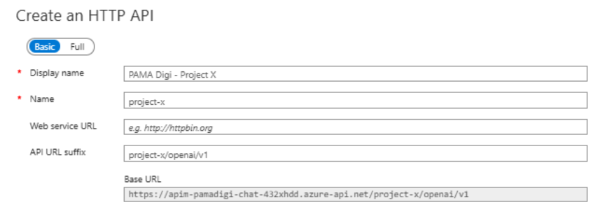

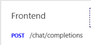
/chat/completions membentuk URL request.
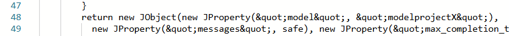
modelprojectX; UI tidak punya pemilih model.
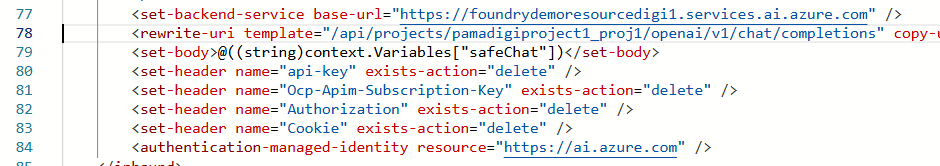
03 / TES SATU REQUEST
3. Kirim pesan dari aplikasi X
- Buka Web App X dan login dengan akun yang diizinkan.
- Tulis pesan contoh tanpa data pelanggan, lalu klik Kirim ke Foundry.
- Pastikan HTTP 200, lalu salin ID request APIM. ID ini dipakai pada bagian 4.
Pilihan rute Main dan Y (pola setup-nya sama)
| Rute | Suffix / subscription | Project → deployment |
|---|---|---|
| Web App Main | main/openai/v1pamadigi-main | rg_demo_pamadigi-proj1 → gpt-5.6-sol |
| Web App X | project-x/openai/v1pamadigi-project-x | pamadigiproject1_proj1 → modelprojectX |
| Web App Y | project-y/openai/v1pamadigi-project-y | pamadigiproject1_proj2 → modelprojectY |
Bukti lab 19 November 2026: Main, X, dan Y
Ketiganya mendapat HTTP 200: 21 token input + 12 output per request. Ini bukti historis, bukan tes baru saat halaman dibuka.

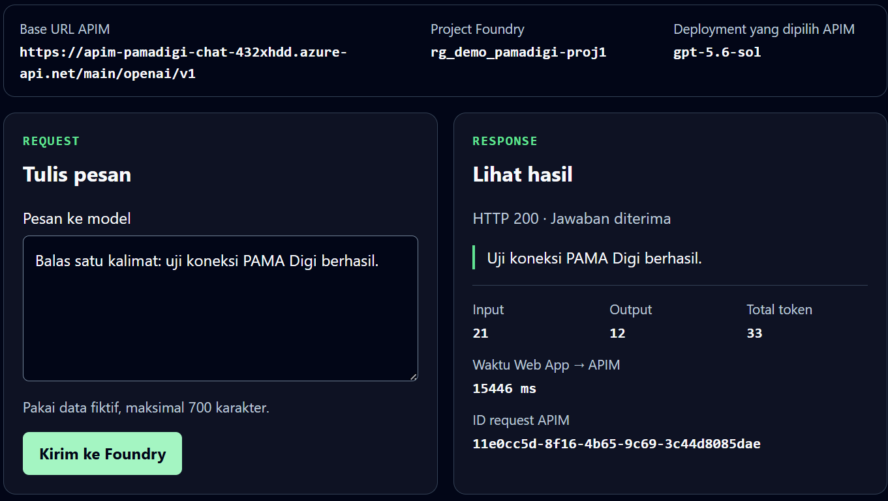
gpt-5.6-sol.
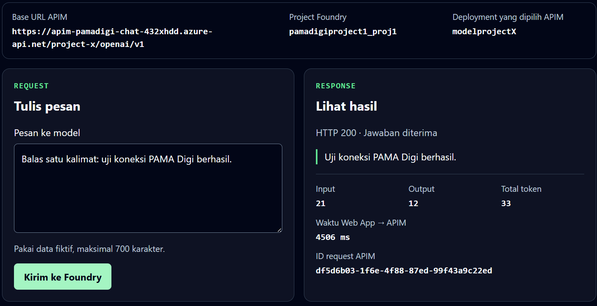
modelprojectX.
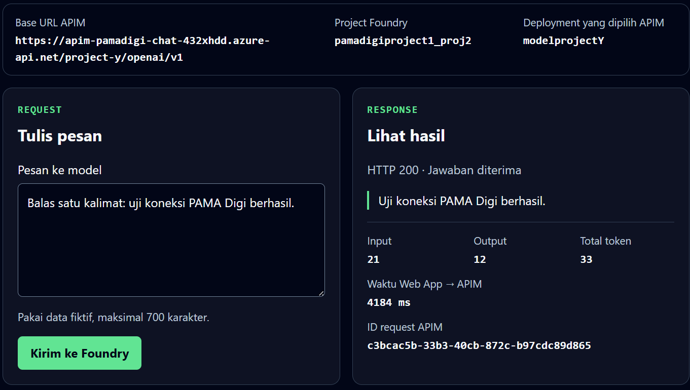
modelprojectY.Arsip screenshot konfigurasi ketiga rute
Main · 9 layar konfigurasi dan hasil

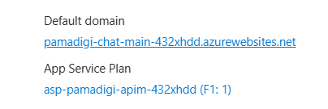


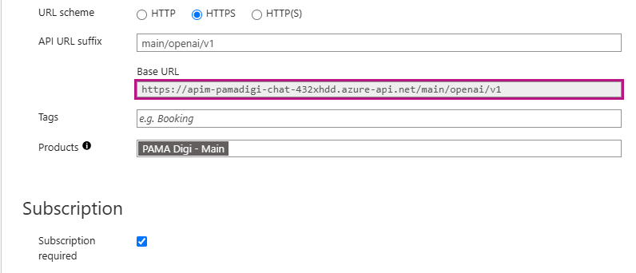

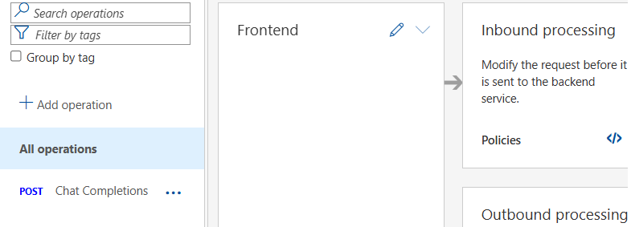

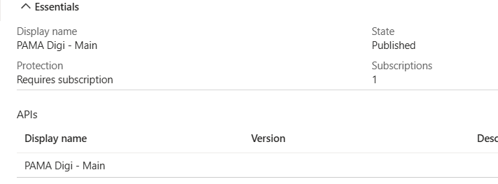

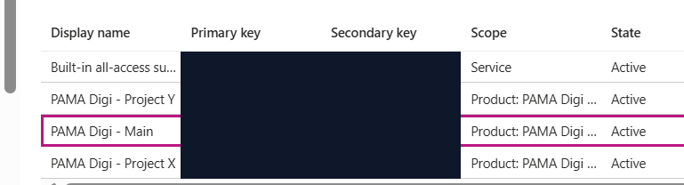
<APIM_KEY_MAIN> sebagai placeholder.
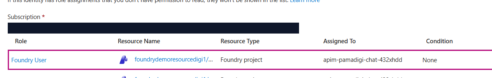
rg_demo_pamadigi-proj1.
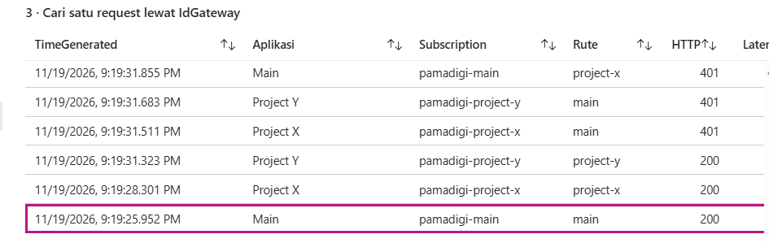
Project X · 9 layar konfigurasi dan hasil


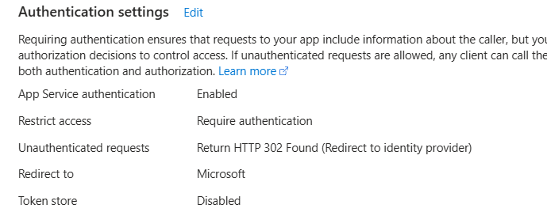


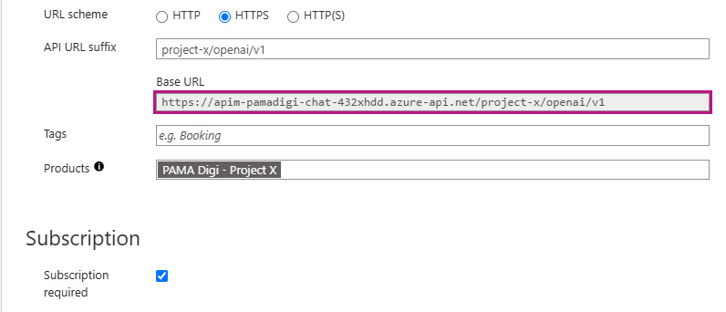

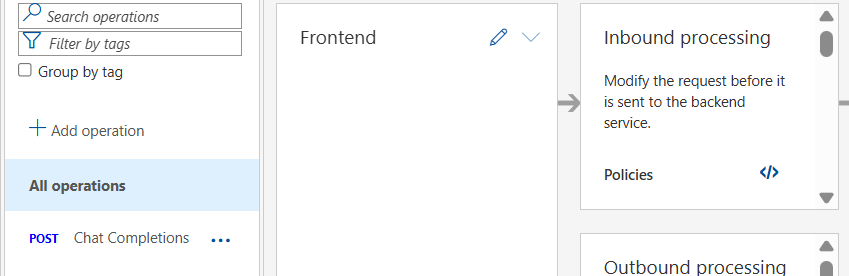

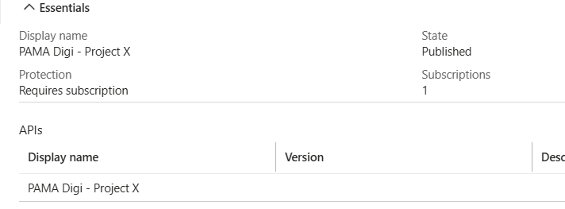

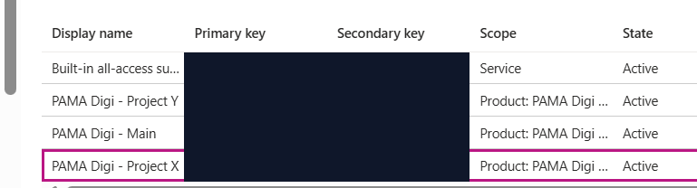
<APIM_KEY_X>.
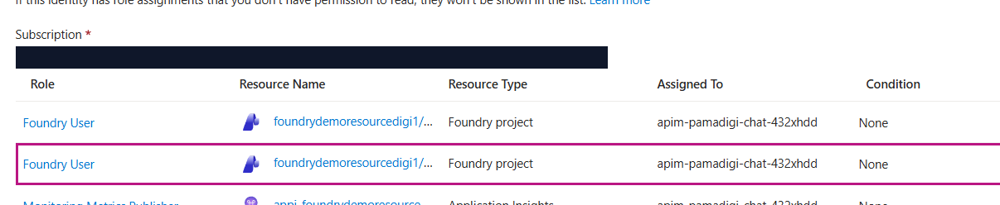
pamadigiproject1_proj1.
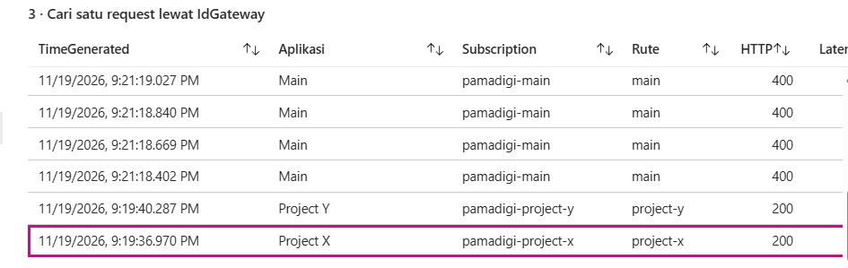
Project Y · 9 layar konfigurasi dan hasil

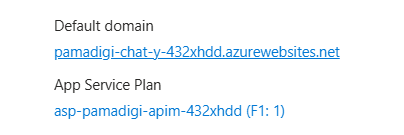


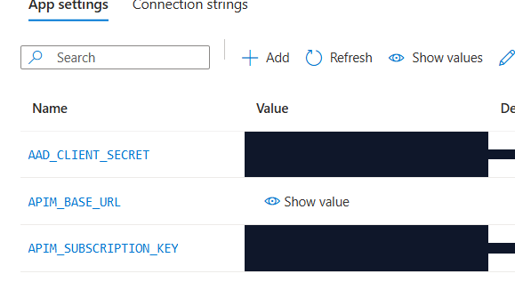


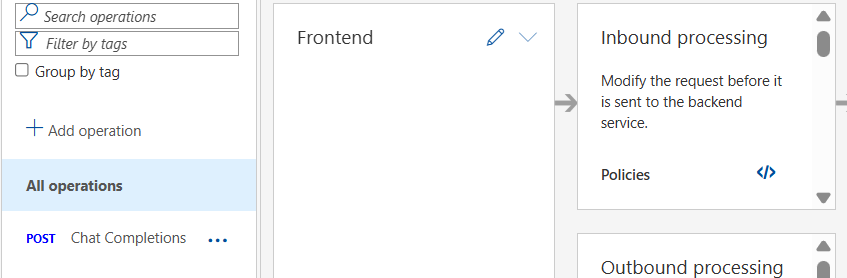

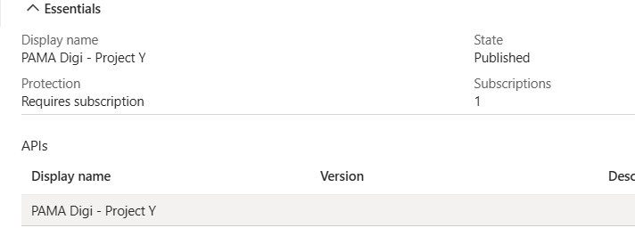

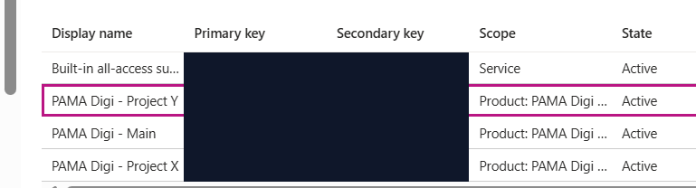
<APIM_KEY_Y>.
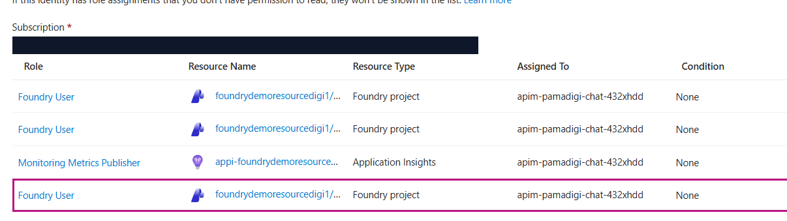
pamadigiproject1_proj2.
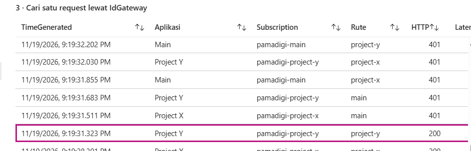
Contoh body dan batas demo
Content-Type: application/json
{"model":"apim-chooses-deployment","messages":[{"role":"user","content":"Balas satu kalimat: uji koneksi PAMA Digi berhasil."}]}APIM menetapkan nama deployment. Lab ini hanya mendukung Chat Completions teks tanpa streaming atau tools, maksimal 700 karakter dan 256 token output. Jangan kirim data pelanggan. APIM membatasi 5 panggilan/menit dan 100 panggilan total per subscription.
Hasil uji penolakan akses (historis)
Enam request langsung berhasil dengan dua bentuk header. Enam kombinasi key tertukar, satu request tanpa key, dan satu key salah ditolak 401. Saat X disuspend untuk tes, Main dan Y tetap berjalan; X diaktifkan kembali setelah tes.
04 / BACA HASIL
4. Pilih workbook sesuai pertanyaannya
| Perbedaan | Lama · Verified Foundry Usage | Baru · APIM dan Foundry |
|---|---|---|
| Pertanyaan utama | Model/deployment mana yang dipakai, berapa tokennya? | Subscription mana memanggil rute apa, diterima/ditolak, dan berapa token modelnya? |
| Cakupan | Panggilan ke Foundry yang tercatat, termasuk yang lewat APIM. | Tiga rute APIM yang didaftarkan query, termasuk penolakan gateway. |
| Pemanggil | Caller = unknown; query tidak mengambil identity native. | Subscription, Aplikasi, Rute. Bukan otomatis identitas pengguna akhir. |
| ID pelacakan | CorrelationId native; data generator memakai ApiRequestId. | IdGateway → IdFoundry. |
| Sumber token | Native atau generator; lihat Source. | Native jika cocok; jika belum, usage respons HTTP bila tersedia. Lihat SumberToken. |
| Estimasi biaya | Tidak ada di query ini. | EstimasiUSD jika kondisi harga terpenuhi. Kosong bukan nol; bukan billing Azure. |
| KQL yang dipakai | KQL lama · Request explorer (.kql) | KQL baru · APIM + Foundry (.kql) · susunan panel workbook |
Bandingkan request yang sama, bukan menjumlahkan kedua workbook.
Cocokkan request yang barusan dikirim
- Di workbook baru → panel 3, cari ID dari aplikasi pada
IdGateway. - Salin
IdFoundrydari baris itu. - Di workbook lama → Request explorer, cocokkan dengan
CorrelationId. Rentang waktunya harus mencakup tes.
Bukti kecocokan di Portal (19 November 2026)

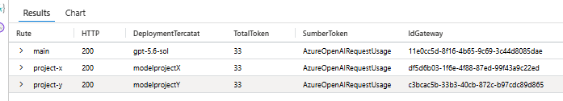

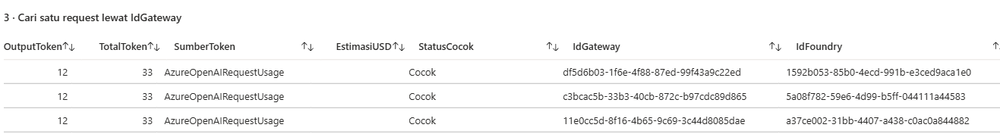
IdFoundry dari baris dengan IdGateway yang sama dengan layar Web App.
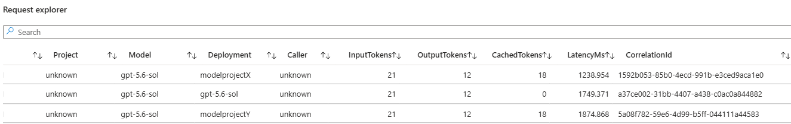
CorrelationId Foundry dan tokennya muncul. Kolom Caller masih unknown.
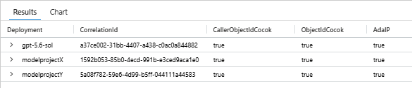
RequestResponse: CallerObjectIdCocok dan ObjectIdCocok sama-sama true untuk identitas APIM. Nilai IP tidak ditampilkan.Catatan query, filter, dan inventori tag
KQL lama adalah salinan panel Request explorer dengan TimeRange diganti Mulai/Selesai agar bisa ditempel di Logs. Ini bukan KQL native lengkap dari workshop monitoring, dan bukan workbook generator PAMADIGI - Foundry Usage.
KQL baru memakai 24 jam terakhir; ubah Mulai/Selesai dan isi IdFilter untuk satu ID APIM. Untuk menyimpannya di workbook: Edit → edit panel query → Done editing → Save. Mengubah file lokal tidak otomatis memperbarui Azure.
Panel inventori tag lama membaca Azure Resource Graph; query baru tidak. Log dan role dibaca sesuai izin pengguna. Pada bukti lab, ProjectTercatat belum terisi; ProjectTujuan berasal dari policy.
Coba query untuk mengecek caller
Di workspace yang sama, buka Logs → KQL mode, tempel query ini, lalu klik Run. Perlu izin baca log dan resource APIM. Untuk tes baru, ganti CorrelationId dengan IdFoundry dari Workbook baru dan sesuaikan waktunya. Query hanya menunjukkan kecocokan, bukan nilai ID identitas atau IP.
let ApimPrincipal = toscalar(arg("").Resources
| where type =~ "microsoft.apimanagement/service" and resourceGroup =~ "rg_demo_pamadigi"
| where name =~ "apim-pamadigi-chat-432xhdd"
| project Principal=tostring(identity.principalId) | take 1);
AzureDiagnostics
| where TimeGenerated between (datetime(2026-11-19T15:22:00Z) .. datetime(2026-11-19T15:33:00Z))
| where _ResourceId endswith "/accounts/foundrydemoresourcedigi1" and Category == "RequestResponse"
| where CorrelationId in~ ("a37ce002-31bb-4407-a438-c0ac0a844882", "1592b053-85b0-4ecd-991b-e3ced9aca1e0", "5a08f782-59e6-4d99-b5ff-044111a44583")
| extend P=parse_json(column_ifexists("properties_s", ""))
| project Deployment=tostring(P.modelDeploymentName), CorrelationId,
CallerObjectIdCocok=isnotempty(ApimPrincipal) and tostring(P.callerObjectId) =~ ApimPrincipal,
ObjectIdCocok=isnotempty(ApimPrincipal) and tostring(P.objectId) =~ ApimPrincipal,
AdaIP=isnotempty(tostring(column_ifexists("CallerIPAddress", "")))
| order by Deployment ascBukti tambahan dari uji API langsung · Langkah 12–16

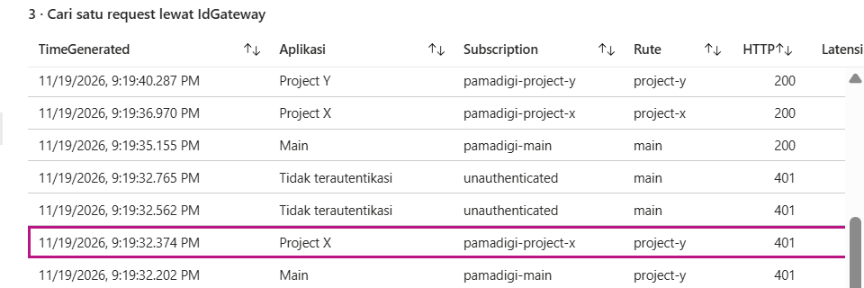

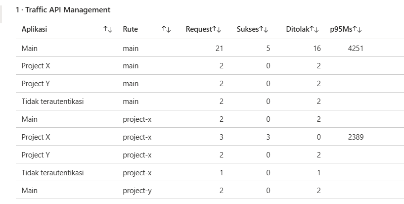

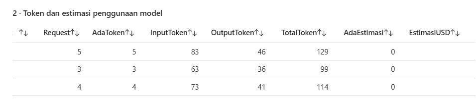

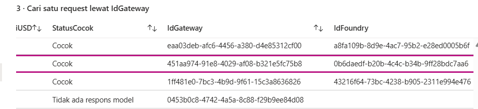

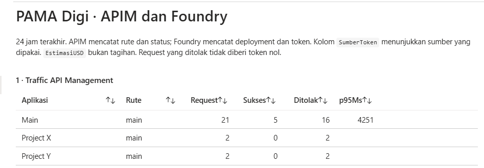
05 / KONEKSI BERIKUTNYA
5. Parameter mana yang berubah?
Pakai koneksi X yang sudah ada: cukup isi URL dan key X di server. Butuh koneksi terpisah: buat pasangan rute, product, dan subscription baru melalui langkah setup di bagian 2.
Daftar parameter — contoh X
| Parameter | Contoh X | Pengaruh |
|---|---|---|
APIM_BASE_URL | https://apim-pamadigi-chat-432xhdd.azure-api.net/project-x/openai/v1 | Alamat depan gateway di server aplikasi, tanpa /chat/completions. |
APIM_SUBSCRIPTION_KEY | <APIM_KEY_X> | Key koneksi. Jika dibagi bersama, laporan juga menganggapnya koneksi yang sama. |
path / subscription | project-x / pamadigi-project-x | Suffix API, product, serta pemeriksaan __SUBSCRIPTION__ pada policy. |
foundryName | foundrydemoresourcedigi1 | Host backend pada set-backend-service. |
project | pamadigiproject1_proj1 | Path rewrite-uri dan scope role Foundry User. |
deployment | modelprojectX | Field model yang ditetapkan policy; deployment harus sudah ada. |
Demo membatasi tiga rute. Menambah profil saja belum membuat rute keempat siap dipakai.
Referensi biaya dan batas demo
- App Service Linux F1: biaya hosting US$0, tanpa SLA. Request awal bisa lebih lambat.
- APIM Consumption: tanpa biaya tetap. Operasi demo memakai jatah gratis yang dibagi per subscription Azure, selama jatah masih tersedia.
- GPT‑5.6-sol Global Standard, short context: contoh 30 request × (300 token input × US$4/juta + 150 token output × US$20/juta) ≈ US$0,13. Ini perkiraan retail, bukan tagihan. Ingest log dan transfer data bisa menambah biaya. Tidak ada App Insights atau workspace baru.
Untuk menghentikan trafik demo tanpa menghapus Foundry, suspend tiga subscription demo di APIM. Rotasi atau bagikan key hanya dari kanal yang disetujui.
Video lab dan sumber menu
Video senyap 3 menit 40 detik memakai urutan materi sebelumnya. Untuk panduan ringkas saat ini, ikuti bagian 1–5 di atas. Screenshot adalah bukti lab 19 November 2026; sumber jalur menu tercantum pada setiap popup dan diperiksa 20 November 2026.
Unduh video MP4 1080p · Baca teks dan urutan adegan
Source konfigurasi: resource APIM · policy rute lengkap · profil tiga API.
Diagram teknis versi lengkap tersedia sebagai file, tidak ditampilkan ulang di panduan: arsitektur lab (.drawio) · isi gateway (.drawio).